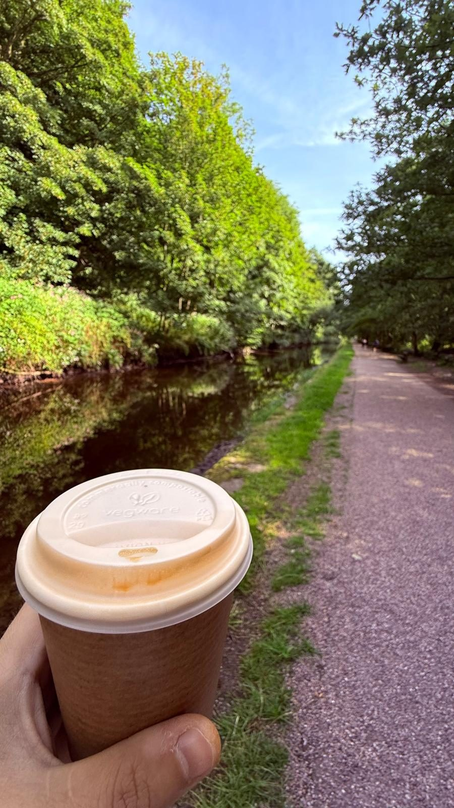
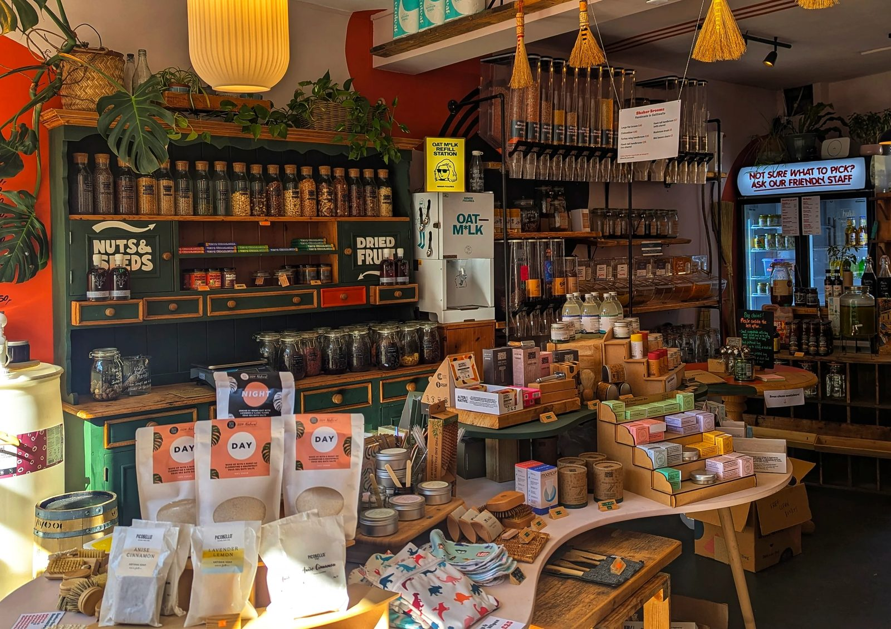

About
Steven Stills
Net zero nerd practising active body & healthy mind
What do you get when you cross a gym goer and climber with a programmer, a night owl problem solver and a game nerd? Something like me, yeah.
Fair warning, this isn't the professional introduction! I'm Steven. Most people who have known me a long time will be surprised when I bring up my advertising degree, on the assumption that I did "something in maths", but figuring out the solution has always been my keen interest and for the last 15 years that has meant a lot of statistical modelling and tonnes of charts and diagrams with boxes and arrows to explain what's going on. I'm dynamic, I'm empathetic and I'm very quick to notice an anomaly in the slide deck.

Outside of work my passions include photography, climbing, a good country hike or a long night in game design.
At work I code in Python and TypeScript, and by night I switch to GDScript for gaming and HTML and CSS for websites like this. But I'm not the best at any of these. My value comes from using my wide set of skills to drive directly towards a tight deliverable.

I've chosen to share these hobbies because they all have something in common, problem solving. Photography is pattern recognition and parameter balancing to get the right shot. Bouldering is planning ahead and testing the process as you go, you might test the water, make an MVP of an attempt before you throw your full efforts in. And finally gaming, a hobby completing problems someone else put in your way, all tied up in a world of rules and boundaries. These all feed into how I solve problems in business. The coffee is the fuel that sticks that all together.
But I'm not always 100% on. I do enjoy a rest at the local sauna on a Friday evening, it's those moments of quiet that help facilitate the next week of problem solving.
I firmly believe that you could be the most intelligent person in the world, but if you couldn't communicate your point, you'd also be the least intelligent person in the world. So I have worked on my communication a great deal over the years.
Peer management and team motivation have always come natural to me, and I've worked hard to match my stakeholder management and upwards management to the same level.
I'm at home in the chaos, and frequently go beyond my remit in a workplace because I believe that the only thing stopping answers coming forth is your imagination to find the solution.
My commitments to net zero
I live in a zero waste household with my wife and neither of us have eaten meat in the last 9 years. We're both industry veterans and we're familiar with the 57 producers behind the majority of global CO2 emissions, but we also believe that every single person can make a difference, and this is us trying our best.
If you haven't tried a zero waste shop yet, grab a couple of pieces of tupperware and find your nearest one. It's an adult pic 'n' mix and always a social affair. Mine is Zero Yorkshire.

But why no meat? There isn't enough land in the UK to produce as much meat as we eat. Farmland covers 69% of the country and 84% of that farmland is used to feed livestock, so about 58% of the UK is there to feed animals.1 The arable side goes the same way, with 56% of croppable land growing animal feed, including 70% of the barley.1
Northern Ireland puts 93% of its farmed land into feeding livestock, Wales 85% and the North West 82%. Only the East of England comes in under a fifth, at 17%.2
I'm not a preacher of it being "the right way". But any meat we do eat is taking from land off shore where it's needed over there. UK beef self-sufficiency was 80.9% in 2024,3 and meeting our demand for seven commodities, beef and soy among them, takes 21.3 million hectares of land overseas every year. That is 88% of the UK's own land area.4
Globally it is starker. Livestock takes 80% of the world's agricultural land and gives back 17% of its calories and 38% of its protein.5
The work bit
I've lived the journey from Excel workbooks to enterprise systems. Now I steer energy firms through the same move. The question that drives me is simple: how can I do this better?
That question pushed me deep into data fundamentals, AI and business transformation. I pair solid industry knowledge with proper data practice, built from the ground up. The goal is always the same: turn large, messy data into insight a leader can act on.
Over a decade in leadership. Reporting straight to C-suite and shareholders. Leading multi-disciplinary teams through influence, not hierarchy, across start-ups and matrixed organisations. I take AI and ML from prototype to production at scale, translate the technical for non-technical stakeholders, and tie it to hard financial value.
Notes & sources
- UK utilised agricultural area was 16.8 million hectares at 1 June 2025, 69% of the UK land area. Defra estimates that 83.9% of that area, and 56.2% of the croppable area, was used to feed livestock in 2024, including 70.2% of the barley and 53.1% of the wheat. 69% × 84% gives the 58% figure. Defra, agricultural land use in the UK at 1 June 2025; Defra, agricultural land used to feed livestock in the UK, December 2025. ↩
- Temporary grass, permanent pasture and sole right rough grazing as a share of the total area on agricultural holdings, June 2025. Defra categorises each of those three as 100% land used to feed livestock. English regions from the Defra June survey regional tables, which report the South East and London together and cover commercial holdings only; Wales, Scotland and Northern Ireland from the UK country tables, where permanent grassland includes sole right rough grazing. Common rough grazing is outside both denominators. Northern Ireland 92.5%, Wales 85.0%, North West 82.5%, Scotland 79.5%, North East 67.9%, South West 64.5%, West Midlands 51.7%, Yorkshire and The Humber 47.6%, South East including London 41.6%, East Midlands 30.8%, East of England 17.2%. England 48.5% and the UK 64.4%. Defra, structure of the agricultural industry at June, region dataset; Defra, agricultural land use in the UK, land use and crops by country. ↩
- UK self-sufficiency in beef and veal was 80.9% in 2024, unchanged on the year; sheep meat was 99.4%. AHDB, beef and lamb market summary 2024. ↩
- An average of 21.3 million hectares of land overseas each year between 2016 and 2018 to meet UK demand for beef and leather, cocoa, palm oil, pulp and paper, rubber, soy and timber, equal to 88% of the UK land area. Soy alone accounted for 1.7 million hectares. WWF and RSPB, Riskier Business: the UK's overseas land footprint, July 2020. ↩
- Grazing land plus cropland grown for animal feed comes to 80% of global agricultural land use, while meat, dairy and farmed fish provide 17% of the world's calories and 38% of its protein. Land shares from Poore and Nemecek (2018); calorie and protein shares from the FAO. Our World in Data, half of the world's habitable land is used for agriculture. ↩
Map boundaries are the ONS International Territorial Level 1 regions, January 2025, ultra generalised. Contains OS data © Crown copyright and database right 2025; contains National Statistics data © Crown copyright and database right 2025. ONS Open Geography Portal.